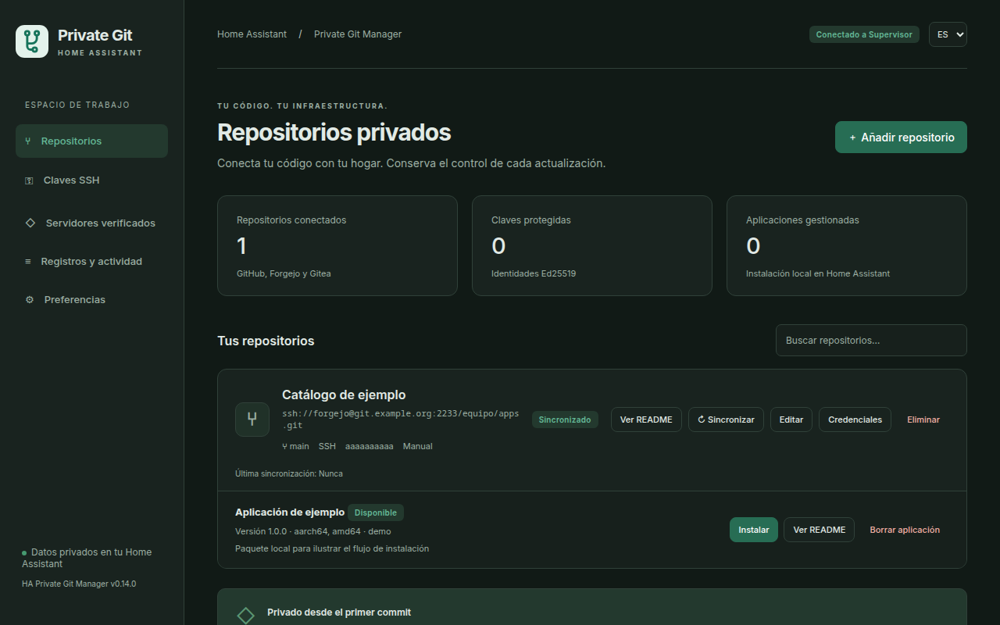
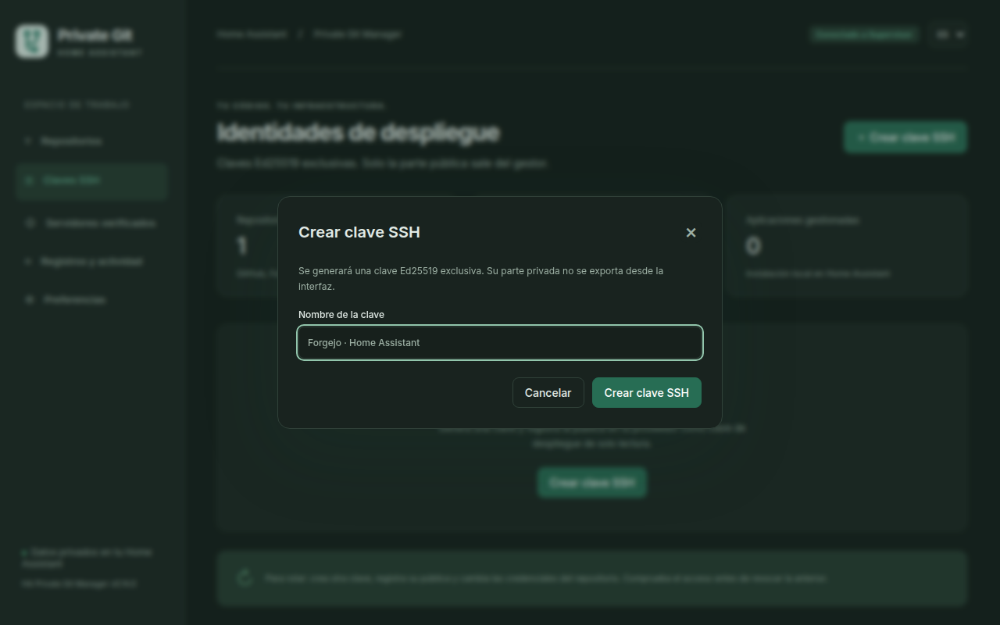
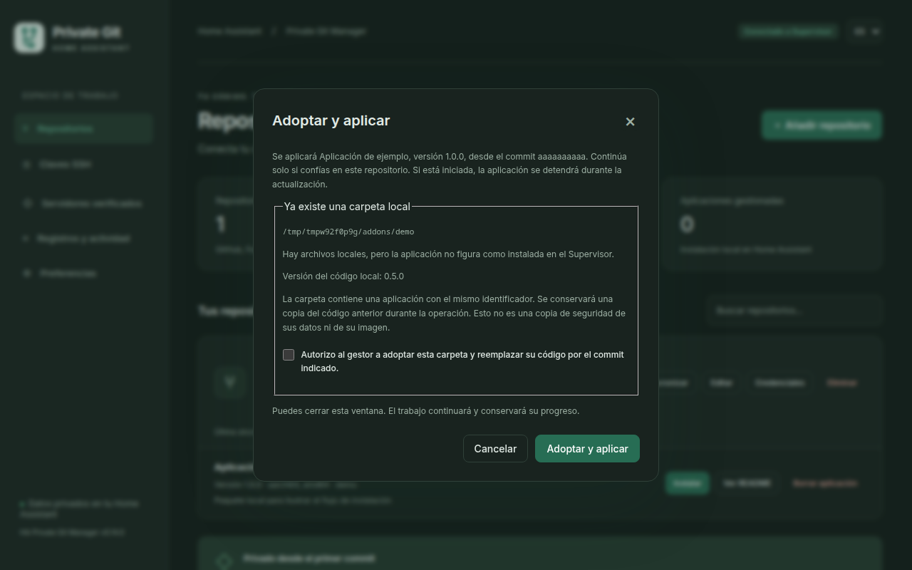

Manual de usuario
Tus aplicaciones Git privadas, en un solo sitio
Conecta Forgejo, GitHub o Gitea, revisa el código sincronizado y administra aplicaciones nativas en Home Assistant OS o YunoHost.


01 · Instalar el gestor
Qué repositorio usar
- Mis-app
- Tienda desde la que instalas el gestor en Home Assistant OS.
- Mis-component
- Catálogo privado que conectas dentro del gestor para instalar integraciones como Forgejo Backup.
- Tu repositorio de copias
- Destino privado donde Forgejo Backup guarda los archivos cifrados.
- HA-Private-Git-Manager
- Repositorio de código fuente y documentación del proyecto.
Home Assistant OS
- Añade Mis-app como repositorio de la tienda de aplicaciones.
- Busca HA Private Git Manager, instálalo y pulsa Iniciar.
- Abre la interfaz web a través de Home Assistant. Puedes fijarla a la barra lateral.
El gestor requiere Supervisor y se distribuye para amd64 y aarch64. La interfaz permite elegir idioma y tema desde Ajustes.
YunoHost
Instala el gestor con el comando siguiente desde YunoHost 12.1.17 o posterior. Elige el dominio de tu administración y una ruta como /private-git. El acceso inicial se concede al grupo admins.
sudo yunohost app install https://github.com/Gente-del-Condado/HA-Private-Git-Manager/tree/v0.16.002 · Conectar un repositorio privado
- En Claves SSH, crea una clave Ed25519. Copia su parte pública y añádela al repositorio de Forgejo como clave de despliegue de solo lectura.
- En Repositorios, indica la URL, la rama o etiqueta y la clave. Para un puerto SSH personalizado usa el formato
ssh://forgejo@git.example.org:2233/equipo/apps.git. - Compara la huella SHA256 que muestra el gestor con la huella del servidor que te facilite su administrador por un canal de confianza. Regístrala y vuelve a sincronizar.
- Abre Ver catálogo o Ver README para revisar la presentación, las aplicaciones y el commit descargado.
Migrar el catálogo cifrado
- Conecta por SSH un repositorio privado de recuperación en Forgejo o GitHub. Autoriza escritura para exportar. Una clave de lectura basta en la instalación nueva.
- En un equipo de confianza, genera la clave con
age-keygen -o recuperacion-pgm.txty obtén la parte pública conage-keygen -y recuperacion-pgm.txt. Guarda el archivo de recuperación fuera del gestor. - En Preferencias → Copia y migración del gestor, elige Exportar configuración cifrada. Selecciona el destino y pega la clave pública
age1…. - En el gestor nuevo, conecta el repositorio de recuperación y elige Importar desde repositorio. Selecciona la copia, introduce la línea privada de age y revisa el catálogo antes de confirmar.
Funciona en Home Assistant OS y YunoHost. Se importan los repositorios que falten. Vuelve a configurar sus claves y tokens y verifica las huellas antes de sincronizar. Los datos de las aplicaciones se recuperan con sus copias nativas.


Para HTTPS, usa https://git.example.org/equipo/apps.git y completa usuario y token en los campos de credenciales. Para rotar una clave, prueba la nueva con una sincronización antes de revocar la anterior.
03 · Organizar aplicaciones y catálogos
Una aplicación de Home Assistant
Incluye config.yaml, config.yml o config.json con los campos name, version, slug, description y arch. Añade un Dockerfile o indica una image en el manifiesto. El slug es el identificador estable de la aplicación.
Varias aplicaciones de Home Assistant
Usa un repository.yaml y un README.md en la raíz, y una carpeta por aplicación. Cada manifiesto debe tener un slug distinto. Coloca las plantillas de empaquetado con una extensión como config.yaml.in para que se reconozcan únicamente los manifiestos instalables.
mi-catalogo/
├── repository.yaml
├── README.md
├── sensor_local/
│ ├── config.yaml
│ ├── Dockerfile
│ └── DOCS.md
└── pasarela/
├── config.yaml
└── DockerfileUn paquete nativo de YunoHost
Usa un repositorio por paquete con manifest.toml de formato 2 en la raíz y los scripts scripts/install, scripts/upgrade y scripts/remove. La edición YunoHost muestra los complementos de Home Assistant como catálogo.
04 · Instalar, configurar y actualizar en Home Assistant
- En la ficha del paquete, pulsa Instalar y comprueba la versión y el commit. Si el gestor detecta una copia local compatible, revisa la ruta antes de adoptarla.
- Cuando termine el trabajo, abre Configurar. El formulario usa el esquema nativo del complemento y ofrece YAML avanzado. Guarda los cambios e inicia la aplicación.
- Usa Logs de la aplicación para buscar, refrescar o descargar su salida. Si está en marcha y ofrece Ingress, Abrir interfaz web abre el panel nativo.
- Sincroniza cuando haya cambios en Git. Revisa el changelog y selecciona Actualizar / reconstruir o Crear copia y actualizar. La sincronización programada solo descarga cambios.


Desinstalar retira la aplicación del Supervisor y conserva el código local. La desinstalación elimina datos internos y opciones, por lo que conviene hacer una copia antes. Desvincular conserva el código y retira el registro. Borrar aplicación también elimina el código de esa aplicación y permite ocultarla del catálogo.
05 · Instalar y actualizar componentes de Core
- En Repositorios, añade Mis-component por SSH, con una clave de despliegue de lectura, y sincroniza
main. Copia la URL SSH de tu catálogo en Forgejo o GitHub. - Abre Componentes. Busca por nombre, dominio o repositorio. La ficha muestra la versión del catálogo, la versión en disco, el README y el estado.
- Pulsa Instalar integración o Actualizar integración, revisa el commit y confirma. Espera a que termine y reinicia Home Assistant Core. Si es la primera instalación, da de alta la integración en Ajustes → Dispositivos y servicios.
Para publicar una integración propia, coloca manifest.json y __init__.py en custom_components/<dominio>/. El dominio del manifiesto debe coincidir con la carpeta. Instala código Python solo de repositorios y commits de confianza.
06 · Copias y recuperación en Home Assistant
Desde Copias de seguridad, crea una copia nativa de la aplicación, restaura sus datos, descarga el archivo original, importa un .tar nativo de hasta 512 MiB o elimina una copia. La restauración reemplaza los datos de la aplicación elegida. Descargar o borrar afecta al archivo completo, incluso si contiene otras aplicaciones.
Programa copias locales con un intervalo entre 1 y 720 horas y una retención entre 1 y 30. Las copias programadas se guardan sin cifrar. Para una copia manual cifrada, conserva la contraseña fuera del gestor.
Consulta Registros y actividad para comprobar el resultado de cada trabajo. Si ves Recuperación pendiente, verifica primero el estado en Supervisor. Después revisa si debes restaurar la copia de código o aceptar la versión actual. La recuperación del código y la restauración de datos son operaciones distintas.
07 · Copias completas de Home Assistant en Forgejo y GitHub
Forgejo Backup añade Forgejo como ubicación de las copias nativas de Home Assistant. Core programa, cifra y restaura las copias.
Configurar el destino de copias
- Instala Forgejo Backup desde Componentes y reinicia Core. Crea en Forgejo un repositorio privado dedicado a copias. Puedes dejarlo vacío.
- En Ajustes → Dispositivos y servicios, añade Private Git Manager · Forgejo Backup e introduce la URL SSH del repositorio de copias.
- Añade la clave pública que muestra el asistente como clave de despliegue con escritura. Verifica la huella del servidor por un canal de confianza.
- En Ajustes → Sistema → Copias de seguridad, selecciona Forgejo como ubicación, activa el cifrado y elige qué incluir. Guarda el kit de emergencia fuera del equipo.
Configurar GitHub como destino de copias
Desde Forgejo Backup 0.2.0 puedes usar un repositorio privado de GitHub.com como otra ubicación. Añade una entrada de la integración con la URL SSH de GitHub, registra la clave de despliegue con escritura y verifica la huella. En las copias nativas de Home Assistant, selecciona GitHub y activa el cifrado.
Para publicar el TAR cifrado como adjunto, usa la URL web del repositorio y un token detallado con Contents → Read and write, limitado a ese repositorio. El límite del proveedor es 1900 MiB por copia. El README enlaza al TAR si se publicó el adjunto y al ZIP con los fragmentos.
Encontrar y descargar una copia en la web
Forgejo Backup crea un README si el destino carece de ramas. La integración actualiza Copias recientes al subir o borrar una copia. Muestra las 20 últimas con nombre, tamaño y fecha en la zona horaria de Home Assistant, con el desfase respecto a UTC.
Descargar el TAR cifrado directamente
- Actualiza Forgejo Backup a 0.1.5 o posterior y reinicia Core. En Ajustes → Dispositivos y servicios → Forgejo Backup → Configurar, indica la URL HTTPS del mismo repositorio de copias. Puedes usarla con o sin
.git. - En Forgejo, crea un token limitado a ese repositorio con permiso
write:repository. Pégalo en el campo del token de Home Assistant. La clave SSH existente sigue guardando las copias por Git. - En el README, abre Ficha para consultar el
sha256. Pulsa Descargar backup.tar en esa misma fila con tu sesión web de Forgejo iniciada. - Ejecuta
sha256sum backup.tary compara el resultado con la ficha. Importa el TAR cifrado en Home Assistant y usa la clave del kit de emergencia.
El enlace aparece en las nuevas copias cuando Forgejo acepta el adjunto. El adjunto ocupa espacio adicional y puede estar sujeto a los límites de Forgejo o del proxy. Conserva el token configurado para que Home Assistant pueda retirar los adjuntos al aplicar la retención.
Si Forgejo está detrás de YunoHost
Si el asistente indica que YunoHost redirige la API al inicio de sesión, abre Usuarios → Grupos y permisos en YunoHost y comprueba que Forgejo API está permitido para Visitantes. Ese permiso cubre la ruta /forgejo/api/ si instalaste Forgejo en /forgejo. Forgejo sigue exigiendo un token válido para acceder al repositorio privado.
Puedes comprobar el acceso abriendo /forgejo/api/v1/version en una ventana privada. La API debe responder con JSON. Si aparece el portal de YunoHost, revisa el permiso de la API o la versión del paquete de Forgejo. Mientras tanto, las copias siguen guardándose por SSH.
Recuperar una copia desde el ZIP
Usa el ZIP para las copias anteriores o si falta el enlace al TAR. Si el repositorio tiene un README propio, busca las etiquetas pgm-meta-* y pgm-data-* con el mismo identificador desde Código → Etiquetas.
- Anota el
sha256de la ficha. Descarga el ZIP de la misma copia y extráelo en una carpeta nueva. - En la carpeta con
part-000000,part-000001, etc., ejecuta estos comandos y compara la huella con la ficha.LC_ALL=C cat part-* > backup.tar sha256sum backup.tar - Importa
backup.taren Home Assistant y usa la clave del kit de emergencia para restaurar.
Si Home Assistant sigue operativo y tiene configurada la ubicación Forgejo, también puedes descargar o restaurar la copia desde su lista nativa de copias de seguridad.
Guía de instalación, recuperación por SSH y diagnóstico de Forgejo Backup
08 · Administrar paquetes en YunoHost
- Abre el gestor por HTTPS en el mismo dominio donde tienes una sesión de administrador en
/yunohost/admin/. - Conecta y sincroniza un repositorio con un paquete nativo. Abre Instalar y completa las preguntas que define su manifiesto.
- Al actualizar, elige la instancia y revisa el commit. YunoHost ejecuta los scripts con privilegios de administrador y mantiene su copia de seguridad habitual.
- Desinstalar ejecuta la desinstalación nativa de la instancia seleccionada sin solicitar purgar sus datos. Revisa el resultado y los registros en la administración de YunoHost.
Usa el instalador nativo para los paquetes con preguntas condicionales o de carga de archivos. El gestor avisa si YunoHost detecta un requisito incumplido. Actualiza también el propio gestor desde YunoHost. Si se interrumpe la conexión, comprueba el estado real de la operación antes de repetirla.
Ver los comandos de instalación, cambio de URL, copia y restauración
09 · Resolver problemas
- Slug duplicado
- Si falla al sincronizar, busca dos manifiestos con el mismo slug en la rama descargada. Si solo falla al instalar, revisa también
/addonsen Home Assistant y sus copias de carpetas antiguas. Conserva el identificador del complemento instalado. - La carpeta local ya existe
- Comprueba el manifiesto de
/addons/<slug>. Si coincide, revisa y autoriza la adopción. Si pertenece a otro complemento, localiza el conflicto antes de mover archivos. - La huella SSH ha cambiado
- Confirma con el administrador del servidor que se trata de una rotación prevista. Actualiza la identidad de confianza solo después de comparar la nueva huella.
- La actualización del gestor no aparece
- Actualiza el catálogo de Mis-app y verifica que la tienda muestra una versión superior. En YunoHost elige una etiqueta publicada al ejecutar la actualización.
- Forgejo Backup no aparece en Componentes
- Comprueba que usas Home Assistant OS y que has sincronizado Mis-component. Si el componente está en disco pero falta en Dispositivos y servicios, reinicia Core.
- El README no muestra la última copia
- Confirma que la copia figura en la ubicación Forgejo en Home Assistant. El índice se actualiza al subir o borrar copias en un README gestionado. Las etiquetas permiten acceder a ellas si el índice no está disponible.
- Reinstalación y datos
- Haz una copia del gestor. En Home Assistant sus datos están en
/config/private-git-manager. En YunoHost la copia del gestor incluye las claves, credenciales, catálogos y actividad. Guarda las copias con acceso restringido.
10 · Mantener el código y este manual
El manual es HTML y CSS estático. Su código y sus capturas viven en docs/. La guía de desarrollo explica qué módulos cambiar, qué contratos mantener y cómo reproducir las pruebas.